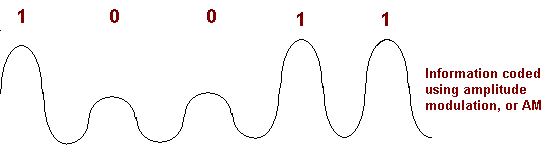

Cerveau de notre projet, la carte Arduino assure le fonctionnement des autres composants et collecte les informations des différents capteurs.
L'arduino est une plateforme de prototypage open-source basée sur un hardware et un software simple à utiliser. Elle est capable de réaliser des actions simples comme allumer une LED mais également d'éxécuter des algorithmes complexes tel que ceux utilisé pour la cartographie. La carte Arduino doit être programmé à l'aide de l'IDE (Integated Development Environment) ainsi que le language de programmtion Arduino basé sur le C et le C++.
L'Arduino est utilisé dans beaucoups de projets amateurs mais également professionnels comme par exemple l'imprimante 3D Materia 101 ou même un moteur de fusée basé sur l'Arduino Uno.
La communauté derrière Arduino est énorme , allant de l'étudiant au grand scientifique. Cela a permit de créer une documentation colossale sur internet, elle nous a permit entre autres de prendre
en main très rapidement les nouveaux composants.
Il existe 3 types d'Arduinos, l'Arduino Nano, l'Arduino Uno et l'Arduino Méga.

Nous avons orienté notre choix vers cette dernière car elle offre plus de ports ainsi qu'une plus grande puissance de calcule et plus de stockage.
La carte Arduino n'étant pas assez puissante pour alimenter deux moteurs, nous utilisons ce motor shield afin d'apporter une seconde source d'énergie.
La motor shield est un module qui se connecte à l'Arduino, Il permet d'y ajouter une seconde alimentation, de connecter plusieurs moteurs ainsi que de les controller. Ce module est nécessaire afin de fournir
aux moteurs une puissance adéquate. Il permet également de controller la tension envoyée aux moteurs, en ajustant celle-ci il est possible de modifier la vitesse ainsi que le sens de rotation.
Le modèle de motor shield que nous avons choisi permet de connecter jusqu'à 4 moteurs.

Nous n'en n'utiliserons dans ce projet que 2 mais il serait tout à fait possible d'ajouter un servo moteur (moteur ne tournant que de 180° mais permettant de connaitre l'angle exacte de rotation) surmonté d'un capteur à ultrasons afin d'effectuer un scan sur 180°.
Afin de communiquer les informations reçues par le robot, à l'utilisateur nous avons opté pour un module Bluetooth.
Le Bluetooth à été créé en 1994 par Ericsson, une entreprise suédoise. Le but de cette technologie était de permettre le transfère de données sur de courtes distances entres plusieurs appareils sans aucun cables.
Afin de réaliser cet échange de données, les ingénieurs ont utilisés les ondes radios, plus précisement la bande de fréquence 2.4 GHz aussi appelée ISM (Insdustrial, Scientif and Medical). Cette fréquence a pour particularité de ne nécessiter aucune license afin d'être exploitée, ce qui permet au Bluetooth d'être présent partout, aussi cette bande de fréquence est comprise entre 2400 MHz et 2483.5 MHz il a donc été possible de créer un "transceiver" (équipement électronique composé d'un émetteur et d'un récepteur) à sauts de fréquence afin de réduire les interférences.
Le saut de fréquence était à l'origine utilisé par l'armée afin d'empécher l'écoute de leurs transmissions radios. Son fonctionnement est simple. Si l'on prend l'example de la bande ISM et du Bluetooth, notre bande est composé de 79 canaux, la pèriode du saut de fréquence du Bluetooth est de 625 µs ce qui veut dire que toutes des 625 µs le Bluetooth change de canal, soit 1600 fois par secondes. On comprend donc très vite qu'il est impossible d'intercepter une transmission en se placant sur une fréquence qui change 1600 fois par secondes. Cependant ce n'est pas le seul avantage du saut de fréquence, en effet celui-ci permet d'éviter de saturer la bande passante d'un canal et de laisser les autres non-utilisées.
Mais commment est transmise l'information au travers d'ondes radios ?
Il faut savoir que le language machine est codé en binaire, il n'est donc composé de bits qui prennent pour valeur soit 0 soit 1. En créant des combinaisons il est possible de faire correspondre le système binaire au système décimal.
Une fois que notre information a été transformée sous forme binaire il faut qu'elle soit transmise sous forme d'une onde radio, pour cela il existe deux méthodes (les deux plus communes):
La première est la "Modulation par déplacement de fréquence", cette méthode consiste en modifier légèrement la fréquence du signal en fonction de la valeur du bits.
Il est possible de voir sur le schéma ci-dessus que lorsque le bit a une valeur de 1 la fréquence du signal modulé est plus élevée et inversement, lorsque la valeur du bit est de 0 la fréquence du signal est plus faible.
La seconde méthode est la "Modulation par déplacement d'amplitude", elle consiste à modifier l'amplitude du signal en fonction de la valeur du bit.
On peut observer sur le schéma que l'amplitude du signal est plus faible lorsque le bit a pour valeur 0 que lorsque qu'il a pour valeur 1.
La seconde technique possède plusieurs avantages, elle est par exemple moins affectée par les obstacles physiques et permet d'émettre sur de très grandes distances. Cependant le Bluetooth utilise la première méthode, en effet celle-ci présente des avantages plus attrayants, il est entre autres moins affecté par les bruits (influences perturbatrices sur le signal) car ceux-ci influence l'amplitude du signal. La première méthode permet donc une transmission sur une distance, certe plus courte, mais plus sûr.
Pour que notre robot se déplace de façon linéaire et pour augmenter la précision de sa rotation, nous avons décidé d'implémenter un gyroscope à notre robot.
Afin de mesurer l'angle de rotation de notre robot nous utilisons un gyroscope. Celui-ci permet de mesurer un rotation sur 3 axes, pour ce faire le gyroscope est composé d'élements mobiles. Ces élements vont permettre de représenter les mouvements d'un solide dans l'espace.
Ils peuvent donc se déplacer et pivoter sur 3 axes et le feront en fonction des mouvements du gyroscope. Il faut ensuite interpréter ces déplacements afin de connaitre le mouvement qu'a effectué le gyroscope, ceci se fait en étudiant les forces fictives de Coriolis.
En simplifiant, l'effet de Coriolis se manifeste par la déviation d'un corp en mouvement lorsque celui-ci est dans un milieu lui même en rotation. Il nous permet donc d'interpréter les mouvements des élements lorsque le gyroscope est en mouvement.

Afin de rendre notre robot autonome nous lui avons ajouté des capteurs à ultrasons. Ces capteurs permettents de calculer très simplement la distance d'un obstacle.
Les capteurs à ultrasons ont pour rôle de permettre au robot d'évaluer des distance. Le fonctionnement de ce type de capteurs est assez simple, il est équipé d'un émetteur ainsi que d'un récepteur à ultrasons, l'emetteur va emettre durant une courte durée un ultrasons, celui-ci va rebondir sur l'obstacle revenir vers le récepteur. En connaissant la vitesse du son dans l'air, qui est de 343.2 m/s à 20°C, il suffit de résoudre l'équation distance = vitesse * temps où la vitesse est égale à 343.2 m/s et le temps est égale à la différence entre le temps d'émission et de réception divisé par deux car ce temps prend en compte l'aller et le retour.
Bien que ce type de capteur ait de nombreux avantages, entre autres la portée de l'ultrason qui peut atteindre jusqu'à 250 cm et son prix qui est dérisoire par rapport à celui d'un LIDAR (cf. Notre démarche). Il a tout
de même des inconvénients:
- La température et la pression vont créer des interférences car la vitesse du son en dépend.
- La présence d'ultrasons sur la même fréquence que ceux du capteurs vont produire des interférences.
- Dans certains cas l'obstacle ne sera pas perpendiculaire au capteur et l'ultrason risque d'être dévié et ne pas revenir vers la récepteur, dans ce cas l'obstacle sera invisible pour le robot.
Afin de cartographier l'environnement du robot nous avons besoin de connaitre exactement la vitesse de déplacement de celui-ci. Les pointeurs et les recépteurs vont nous permettre de connaître celle-ci assez simplement.
Afin de réaliser une cartographie, nous avions besoin de connaitre la vitesse de déplacement du robot. La motor shield nous permet de définir une vitesse cependant celle-ci n'est pas exprimée en distance/temps et varie en fonction de la tension envoyée à celle-ci. Nous avons donc élaboré un moyen de connaitre la vitesse du robot à l'aide de pointeurs et de récepteurs lasers. Un pointeur laser est placé d'un coté de la roue et une recepteur de l'autre coté de celle-ci. Lorsqu'un objet opaque passe entre le récepteur et l'émetteur, le récepteur perçoit ce changement d'état. Nos roues ayant 5 rayons, il suffit de compter le nombre de changement d'état et tous les 5 changement nous savons que la roue à éffectué une rotation. Il ne reste plus qu'à calculer le périmètre de la roue soit: 2Rayon * π. Et de mesurer le temps nécessaire pour faire cette rotation. La vitesse étant égale à la distance divisée par le temps, notre équation sera: vitesse = (2Rayon * π) / temps.

En plaçant ces capteurs infrarouges à des endroits stratégiques vont nous permettre d'éviter d'entrer en collision avec des obstacles que les capteurs à ultrasons n'auraient pas vu.
Capteurs infrarouges Comme pour les capteurs à ultrason, les capteurs à infrarouges fonctionnent sur un principe d’émission/réception. Sauf que l'émetteur cette fois-ci, diffusera des ondes infrarouges, c’est-à-dire les radiations du spectre électromagnétique correspondant à des rayonnements de longueurs d'onde supérieures à celles de la lumière visible, et inférieures à celles du domaine des micro-ondes (les infrarouges se situent donc entre 7μm et 0.1mm).

Après une brève émission, les ondes envoyées percutent un obstacle et son renvoyées vers le capteur. Pour connaître la distance il suffit de résoudre l’équation : distance = (vitesse x temps)/2 avec : vitesse = Célérité =299 792 458 m/s (souvent arrondi à 3.00 x 10E8 m/s) Le principal avantage des capteurs infrarouges est que la vitesse de la lumière reste plus ou moins constante dans l’air, sans que la température n’ait un impact conséquent obligeant un paramétrage différent pour chaque température ambiante. Son principal désavantage est que une réflexion est seulement partielle sur une surface noire.